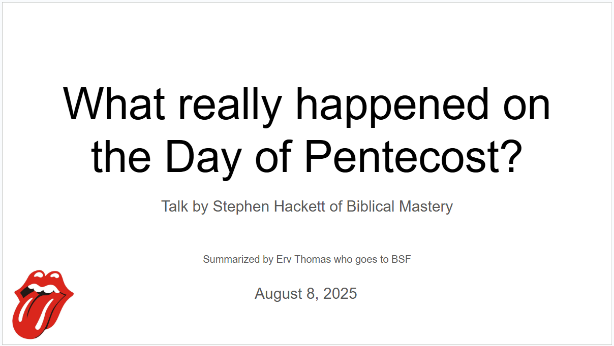
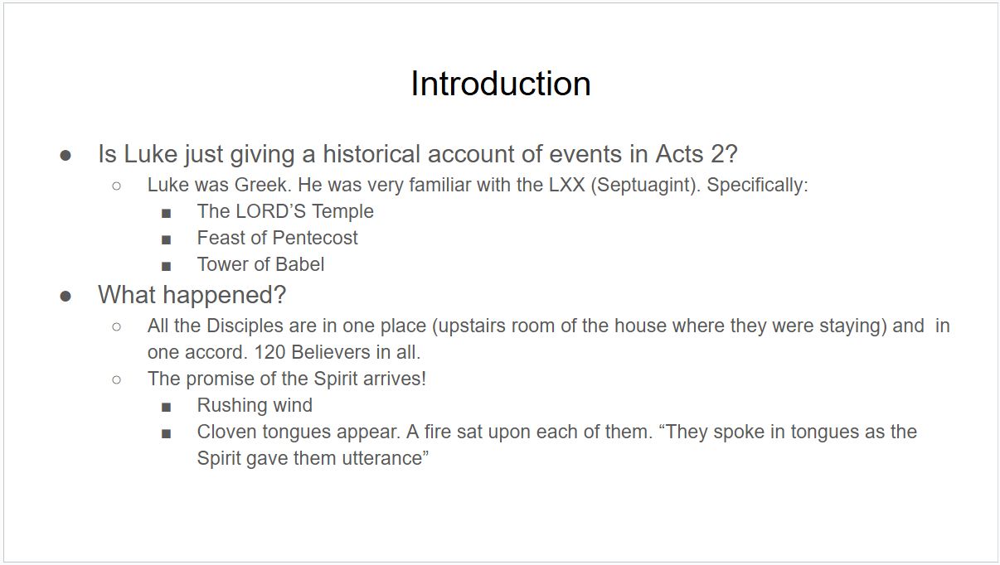
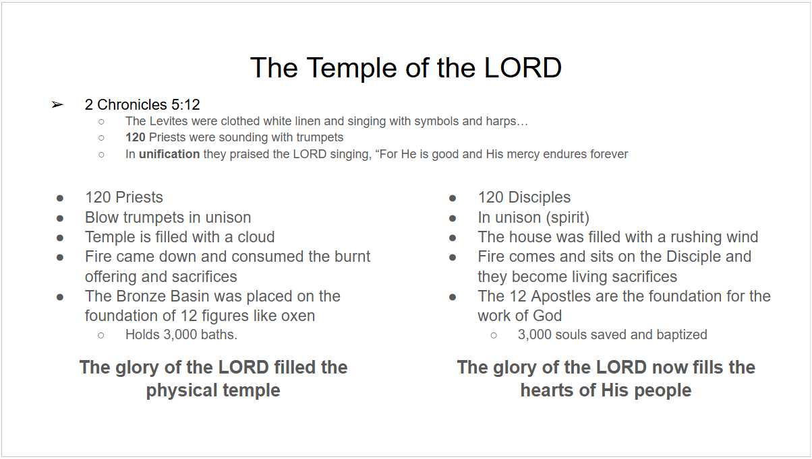
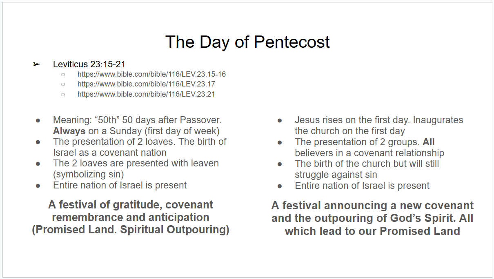
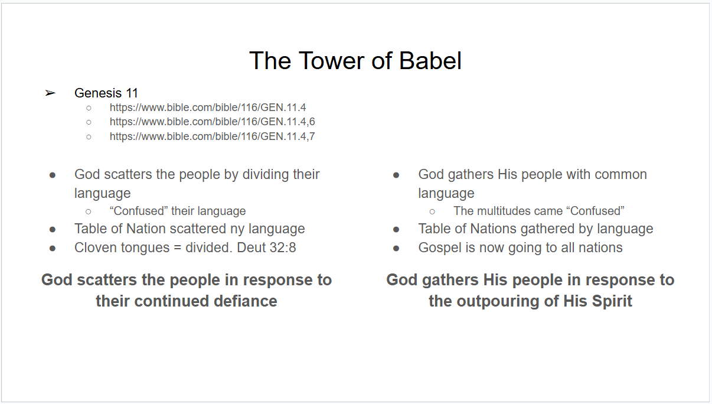

It seems like God's been leading me to study the Old Testament more in Greek — the Septuagint. There are insightful parallels between the OT and NT that don't show up easily when you only compare the Hebrew OT against the Greek NT. So this morning I watched a very interesting YouTube video by Stephen Hackett called 3 Reasons why Pentecost was more explosive than you think. It was so good I watched it twice, and the second time I took detailed notes in a Google Slides deck. I'll share screenshots below too.

Hackett's opening question: is Luke just giving a plain historical account in Acts 2? Luke was Greek, and very familiar with the Septuagint — specifically its language around the LORD'S Temple, the Feast of Pentecost, and the Tower of Babel. Here's what actually happened: all the disciples were together in one place, in one accord, 120 believers in all, when the promise of the Spirit arrived — a rushing wind, cloven tongues appearing, a fire settling on each of them, and they spoke in tongues as the Spirit gave them utterance.

Then he draws the Septuagint parallel to the Temple of the LORD. In 2 Chronicles 5:12, the Levites are clothed in white linen, singing with cymbals and harps, 120 priests sounding trumpets in unison, praising the Lord as “good, His mercy endures forever.” The temple fills with a cloud, fire consumes the offering, and the bronze basin — holding 3,000 baths, set on the foundation of 12 oxen figures — stands at the center. Now line that up against Acts 2: 120 disciples, in unison in spirit, the house filled with rushing wind, fire settling on each disciple as they become living sacrifices, the 12 apostles as the foundation of God's new work, and 3,000 souls saved and baptized that day. The glory of the LORD once filled the physical temple. Now the glory of the LORD fills the hearts of His people.

The Day of Pentecost itself carries its own layered parallel. Leviticus 23:15–21 sets Pentecost 50 days after Passover, always on a Sunday, marked by presenting two loaves of leavened bread — leaven symbolizing sin — with the entire nation of Israel present, celebrating the birth of Israel as a covenant nation. A festival of gratitude, covenant remembrance, and anticipation of the Promised Land. Acts 2 mirrors it precisely: Jesus rises on the first day, inaugurating the church; two groups are presented, all believers now in covenant relationship; the church is born but will still struggle against sin; the entire nation of Israel is present once again. A festival announcing a new covenant and the outpouring of God's Spirit, leading all who believe to their own Promised Land.

And then there's Babel. In Genesis 11, God scatters the people by confusing their language — the Table of Nations divided, in response to humanity's continued defiance. Acts 2 reverses it: God gathers His people with a common language, the multitudes come “confused” yet understanding, the Table of Nations is gathered by language instead of scattered by it, and the gospel starts going out to every nation. God scatters His people in response to defiance; God gathers His people in response to the outpouring of His Spirit.

Not a bad way to see Pentecost with fresh eyes. — Erv
Comments